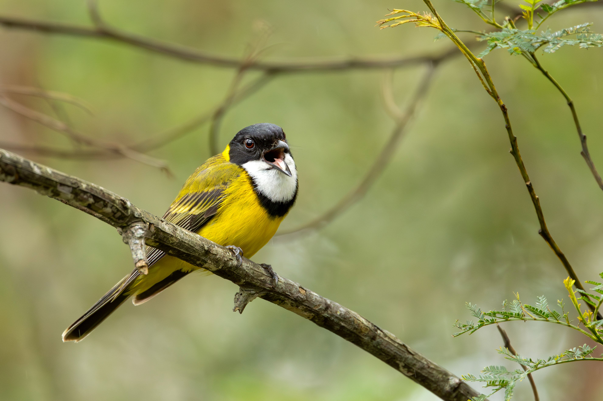

The Australian Golden Whistler is a striking songbird whose male has bright yellow underparts, an olive-green back, a black head and a vivid yellow collar. Females are much duller, with grey and olive-brown plumage. The species is famous for its strong, musical voice and is one of Australia's most impressive songsters. Golden Whistlers inhabit dense woodland, rainforest, mallee and other wooded environments, where they search leaves and branches for insects and spiders. They may also eat berries. The species is closely related to other whistlers, but the male's bright golden underparts and black-and-yellow head pattern make it particularly distinctive.